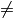
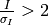
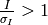

Parameters¶
Commonly used program options¶
There are a number of program options used on a daily basis in xia2, which are:
atom=X tell xia2 to separate anomalous pairs i.e. I(+)  I(−) in scaling pipeline=2d tell xia2 to use MOSFLM and Aimless pipeline=3d tell xia2 to use XDS and XSCALE pipeline=3dii tell xia2 to use XDS and XSCALE, indexing with peaks found from all images pipeline=dials tell xia2 to use DIALS and Aimless xinfo=some.xinfo modified.xinfo use specific input file image=/path/to/an/image.img process specific scan small_molecule=true process in manner more suited to small molecule data space_group=sg set the spacegroup, e.g. P21 unit_cell=a,b,c,α,β,γ set the cell constants
Resolution limits¶
The subject of resolution limits is one often raised - by default in xia2 they are:
- Merged 
- Unmerged 
However you can override these with misigma=..., isigma=...
Phil parameters¶
Note
We have now moved towards moving PHIL (Python-based Hierarchial Interchange Language)
for specifying xia2 program parameters,
which will in the long run help the documentation, but in the mean time you may see some
warnings as certain parameters were changed from -param style parameters to
param= style PHIL parameters. If you see, e.g.:
Warning: -spacegroup option deprecated: please use space_group='P422' instead
Warning: -resolution option deprecated: please use d_min=1.5 instead
Command line option -3d is deprecated. Please use pipeline=3d instead
don’t panic - this is to be expected - but you may want to change the way you run xia2 or your scripts. More of a warning for beamline / automation people! The outcome of this should however be automated generation of command-line documentation and the ability to keep “recipes” for running xia2 in tidy files.
Here is a comprehensive list of PHIL parameters used by xia2:
general {
backstop_mask = None
}
xds {
z_min = 0.0
delphi = 5
delphi_small = 30
untrusted_ellipse = None
untrusted_rectangle = None
trusted_region = None
profile_grid_size = None
keep_outliers = False
correct {
refine = *DISTANCE *BEAM *AXIS *ORIENTATION *CELL *POSITION
}
integrate {
refine = *ORIENTATION *CELL *BEAM *DISTANCE AXIS *POSITION
refine_final = *ORIENTATION *CELL BEAM DISTANCE AXIS POSITION
fix_scale = False
delphi = 0
reflecting_range = 0
reflecting_range_esd = 0
beam_divergence = 0
beam_divergence_esd = 0
reintegrate = true
}
init {
fix_scale = False
}
index {
refine = *ORIENTATION *CELL *BEAM *DISTANCE *AXIS *POSITION
debug = *OFF ON
xparm = None
xparm_ub = None
}
colspot {
minimum_pixels_per_spot = 1
}
xscale {
min_isigma = 3.0
zero_dose = False
}
merge2cbf {
merge_n_images = 2
data_range = None
moving_average = False
}
}
dials {
outlier {
}
find_spots {
filter_ice_rings = False
}
index {
method = fft1d *fft3d real_space_grid_search
}
}
strategy {
i_over_sigi = 2.0
minimize_total_time = False
target_resolution = None
max_total_exposure = None
anomalous = False
dose_rate = 0.0
shape = 1.0
susceptibility = 1.0
completeness = 0.99
multiplicity = None
phi_range = None
min_oscillation_width = 0.05
xml_out = None
max_rotation_speed = None
min_exposure = None
}
xia2.settings {
pipeline = 2d 2di 3d 3dd 3di 3dii *dials
small_molecule = False
failover = False
interactive = False
project = 'AUTOMATIC'
crystal = 'DEFAULT'
scale {
free_fraction = 0.05
free_total = None
freer_file = None
reference_reflection_file = None
}
space_group = None
unit_cell = None
resolution {
keep_all_reflections = Auto
d_max = None
d_min = None
}
beam_centre = None
xds_check_cell_deviation = False
integration {
profile_fitting = True
exclude_ice_regions = False
}
}